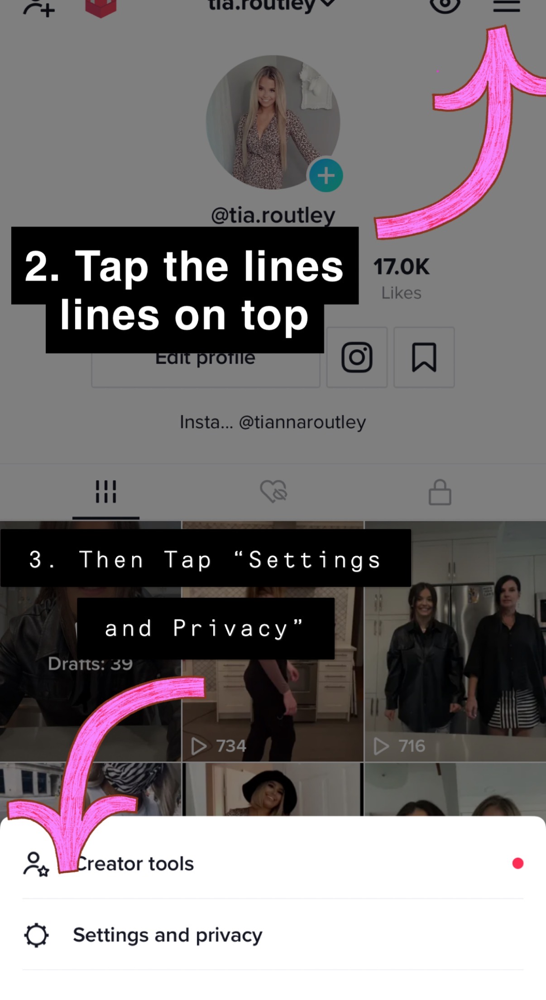
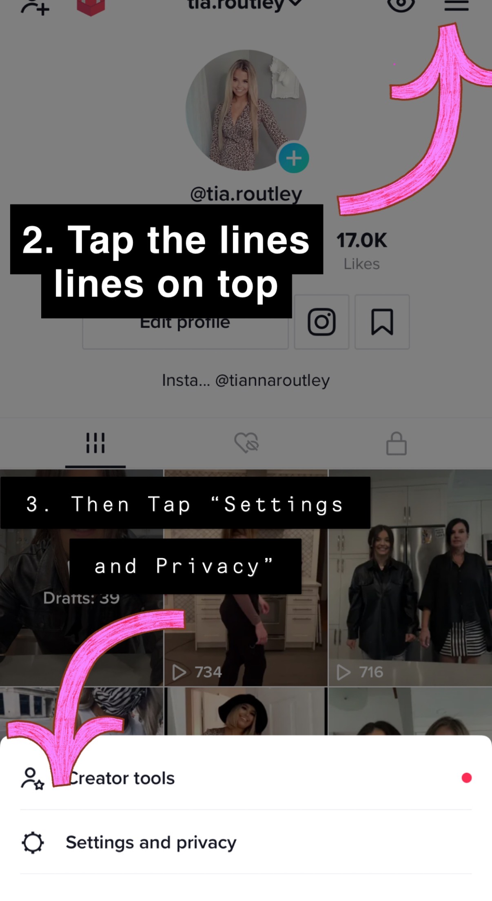
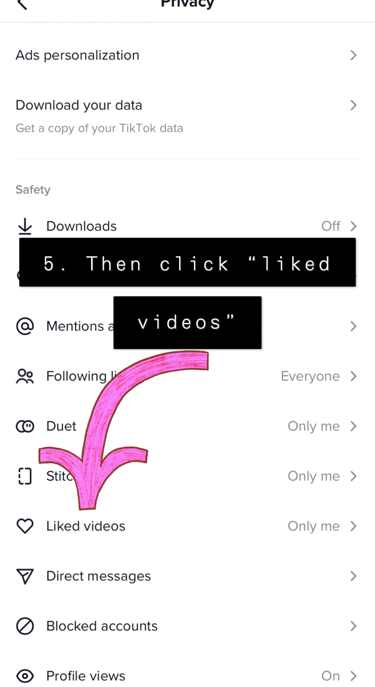
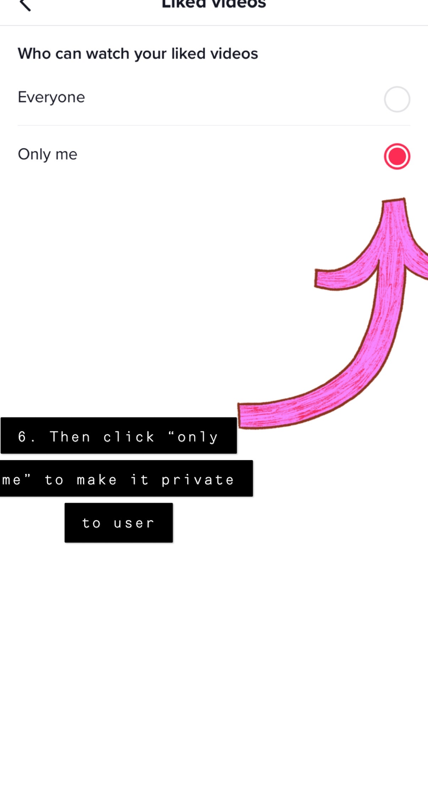
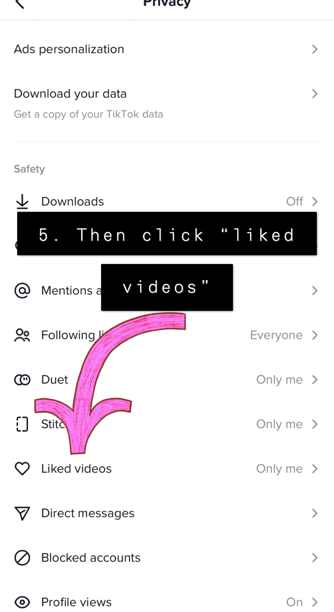
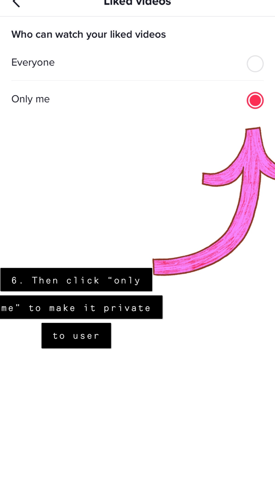
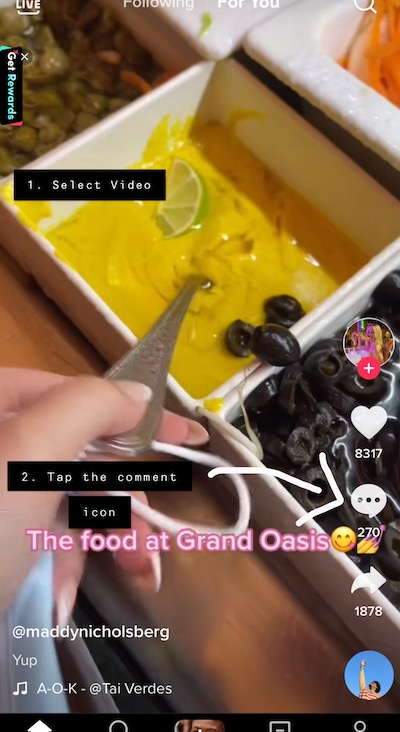
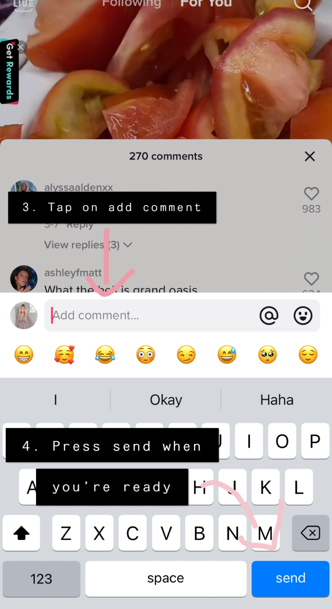

Interactions on TikTok
Tiktok serves as a great resource for individuals to interact with other content creators, comedians or those in the arts community. The platform includes a plethora of features that allow its users to comment, like, share and send gifts to their favourite content creators.
Liking
Liking a video has never been easier for TikTok users. In order to like a video, one can simply tap the heart shaped icon located in the middle right side of the page.
When a user likes the content produced by a content creator, the like is viewed by the person who made the video. However, it should be noted that unless settings are switched to be private, the video can be viewed by all. Attached below are numerical steps to be followed if one wishes to switch their “like history” to not be viewed by others.
 

 



Creators
Educators on TikTok
Educators use TikTok as a platform to reach audience members from all over the world. TikTok provides a platform for creators to share their voices and knowledge. Videos are created with the intent to educate viewers, answer questions and promote learning. All types of content are currently being taught on TikTok. Educators such as Dad, how do I? provides valuable life lessons and educates viewers on how to fix things. Users can also access Janelle Rohner’s content which educates viewers on Keto lifestyles and provides weight loss tips. Depending on the type of content the creators produce, this determines the type of audience members. For instance, Dad, how do I? has an audience of mostly young people while Janelle Rohner’s audience is an older audience as some of the content she shares is keto drinks for those 19+. No matter the topic of interest, there is sure to be a content creator producing educational content on that particular topic.
TikTok as a PLN
Educators on TikTok are able to use the platform as a Personal Learning Network (PLN). For instance, TikTok provides educators with a space to share and utilize worksheets, assignments and activities that fellow teachers have created. The growth of TikTok has allowed it to beome a virtual team to distribute and swap ideas. The app can be a great tool for teacher to expand their personal learning networks and gain insight on useful methods employed by teacher alike.
Educational Post on TikTok Experience
Our group posted the same video on each of our persona’s accounts to see the difference in the interactions of users.
The video posted on Sophia Green’s (persona) account gathered 805 views, 7 likes and 1 follower. This can be attributed to the hashtags #vegan and #sustainable which were placed in the caption. As a result of these hashtags, when someone searches up the hashtag, the video will appear, or the TikTok algorithm could have pushed the video onto users’ For You pages based on their interests in those topics. Please click here to see the TikTok post: https://www.tiktok.com/@sophiagreen111/video/7077332572879015173?is_copy_url=1&is_from_webapp=v1
Ariel Fipke, a macro influencer new to TikTok generated a 2 person following. Having received only 259 views, 4 likes and 1 comment, it became clear she needed to utilize tips and tricks made by fellow tiktok influencers to grow her following and user engagement. Going forward, she may consider utilizing more popular hashtags to increase views. The comment received from a user named (kyleesmithh?) was “Looks so yummy!! Definitely giving this a try.” This comment demonstrates that users do enjoy being shown new, healthy recipes that can be done with just a few ingredients and in a timely manner. This information will allow Ariel to see the success in producing more of this content, but instead making use of trending sounds, concise captions, and popular hashtags to grow her current following.
The Video that was posted to Melanie Mitchell’s profile only got 76 views, 2 likes and 1 follower. It is possible that the only reason why the post got this little of views is from the hashtags. Some of the Hashtags used were, #freshfoods #healthyliving #newrecipe. An interesting thing about hashtags is that the post will get more engagement if the hashtags used have fewer tags altogether. Finding ones with the lowest number of tags means more people could see the post but in conclusion, it did not work very well. To get more engagement on TikTok, the persona would have to be constantly active and posting in order for others to see and engage with. Due to the algorithm, a user must post often in order to be visible or else the user’s profile will get pushed into the background and not be seen.
To see the TikTok Post, the Link is Provided here: https://www.tiktok.com/@melmeltell/video/7077359543008759045?is_copy_url=1&is_from_webapp=v1&q=melmeltell&t=1648068583269
The Tiktok which was posted to the “Lindsay Adams” account received 102 views and 3 likes. By no means did this post go viral, however, the views which were obtained can be attributed to the video appearing on the For you page. The video was most likley placed on individuals for you pages whose interest and previous likes were in line with the video posted. As a result of this, the viewers must have been those who consider themselves to be vegan and those who live healthy lifestyles. A variety of hashtags surrounding healthy living, yoga and vegan living were placed in the caption of the video so viewers could have been drawn in through either searching the hashtags directly or through TikToks algorithm. If Linsay Adams were to have a bgger following, the video would have recieved more comments and it would have been easier to determine exactly what type of audiece members she was attracting.
Concerns with TikTok
As with any social media platform, educators should be aware of the inappropriate content that can be accessed on the app. The most obvious sources of adult content on TikTok are profanity and suggestive clothing. Although the minimum age for a TikTok user is 13 years old, the app does not use any age verification tools when users are creating an account. With the ability to search any hashtag or keywords in the app, users can access any content created by another user. Although TikTok has strict guidelines on nudity and graphic content, since any user can upload their opinions on any topic, offensive content may be shared on the app. Due to the nature of the social media app, when a video becomes viral millions of people can be impacted by ampliganda. According to DiRestas, ampliganda is the new word for misinformation in the digital age. On TikTok, any user can now shape perceptions and realities by having their ideology amplified through shares, likes, and comments of a mass audience.
^ [DiResta, R. (2021, October 5). It’s Not Misinformation. It’s Amplified Propaganda. The Atlantic.(https://www.theatlantic.com/ideas/archive/2021/10/disinformation-propaganda-amplification-ampliganda/620334/)]


Social Media and PLN in Education
Interactions on TikTok
Tiktok serves as a great resource for individuals to interact with other content creators, comedians or those in the arts community. The platform includes a plethora of features that allow its users to comment, like, share and send gifts to their favourite content creators.
Leaving Comments
A comment can easily be made on TikTok with a few simple steps! 1. Select the video you plan to interact with.
2. From here, you must tap the comment icon located on the right.
3. Tap the “add comment” box and write a message.
4. Lastly, press send when you’re ready!
 
12
Liking
Liking a video has never been easier for TikTok users. In order to like a video, one can simply tap the heart shaped icon located in the middle right side of the page.
How to Like
When a user likes the content produced by a content creator, the like is viewed by the person who made the video. However, it should be noted that unless settings are switched to be private, the video can be viewed by all. Attached below are numerical steps to be followed if one wishes to switch their “like history” to not be viewed by others.
Creators
Educators on TikTok
Educators use TikTok as a platform to reach audience members from all over the world. TikTok provides a platform for creators to share their voices and knowledge. Videos are created with the intent to educate viewers, answer questions and promote learning. All types of content are currently being taught on TikTok. Educators such as Dad, how do I? provides valuable life lessons and educates viewers on how to fix things. Users can also access Janelle Rohner’s content which educates viewers on Keto lifestyles and provides weight loss tips. Depending on the type of content the creators produce, this determines the type of audience members. For instance, Dad, how do I? has an audience of mostly young people while Janelle Rohner’s audience is an older audience as some of the content she shares is keto drinks for those 19+. No matter the topic of interest, there is sure to be a content creator producing educational content on that particular topic.
Educators Response to Comments and Questions
A majority of creators prioritize replying and addressing questions made by their audience to create engagement and provide continstency. Comments can directly be responded to in a video, and is often done so by creators. When a question has been asked, educators may produce a video that shows the question being asked and them addressing it. This way, they can directly address the comments and/or questions of their viewers. An example of this is shown below.
TikTok as a PLN
Educators on TikTok are able to use the platform as a Personal Learning Network (PLN). For instance, TikTok provides educators with a space to share and utilize worksheets, assignments and activities that fellow teachers have created. The growth of TikTok has allowed it to beome a virtual team to distribute and swap ideas. The app can be a great tool for teacher to expand their personal learning networks and gain insight on useful methods employed by teacher alike.
Educational Post on TikTok Experience
Our group posted the same video on each of our persona’s accounts to see the difference in the interactions of users.
The video posted on Sophia Green’s (persona) account gathered 805 views, 7 likes and 1 follower. This can be attributed to the hashtags #vegan and #sustainable which were placed in the caption. As a result of these hashtags, when someone searches up the hashtag, the video will appear, or the TikTok algorithm could have pushed the video onto users’ For You pages based on their interests in those topics. Please click here to see the TikTok post: https://www.tiktok.com/@sophiagreen111/video/7077332572879015173?is_copy_url=1&is_from_webapp=v1
Ariel Fipke, a macro influencer new to TikTok generated a 2 person following. Having received only 259 views, 4 likes and 1 comment, it became clear she needed to utilize tips and tricks made by fellow tiktok influencers to grow her following and user engagement. Going forward, she may consider utilizing more popular hashtags to increase views. The comment received from a user named (kyleesmithh?) was “Looks so yummy!! Definitely giving this a try.” This comment demonstrates that users do enjoy being shown new, healthy recipes that can be done with just a few ingredients and in a timely manner. This information will allow Ariel to see the success in producing more of this content, but instead making use of trending sounds, concise captions, and popular hashtags to grow her current following.
The Video that was posted to Melanie Mitchell’s profile only got 76 views, 2 likes and 1 follower. It is possible that the only reason why the post got this little of views is from the hashtags. Some of the Hashtags used were, #freshfoods #healthyliving #newrecipe. An interesting thing about hashtags is that the post will get more engagement if the hashtags used have fewer tags altogether. Finding ones with the lowest number of tags means more people could see the post but in conclusion, it did not work very well. To get more engagement on TikTok, the persona would have to be constantly active and posting in order for others to see and engage with. Due to the algorithm, a user must post often in order to be visible or else the user’s profile will get pushed into the background and not be seen. To see the TikTok Post, the Link is Provided here: https://www.tiktok.com/@melmeltell/video/7077359543008759045?is_copy_url=1&is_from_webapp=v1&q=melmeltell&t=1648068583269
The Tiktok which was posted to the “Lindsay Adams” account received 102 views and 3 likes. By no means did this post go viral, however, the views which were obtained can be attributed to the video appearing on the For you page. The video was most likley placed on individuals for you pages whose interest and previous likes were in line with the video posted. As a result of this, the viewers must have been those who consider themselves to be vegan and those who live healthy lifestyles. A variety of hashtags surrounding healthy living, yoga and vegan living were placed in the caption of the video so viewers could have been drawn in through either searching the hashtags directly or through TikToks algorithm. If Linsay Adams were to have a bgger following, the video would have recieved more comments and it would have been easier to determine exactly what type of audiece members she was attracting.
Concerns with TikTok
As with any social media platform, educators should be aware of the inappropriate content that can be accessed on the app. The most obvious sources of adult content on TikTok are profanity and suggestive clothing. Although the minimum age for a TikTok user is 13 years old, the app does not use any age verification tools when users are creating an account. With the ability to search any hashtag or keywords in the app, users can access any content created by another user. Although TikTok has strict guidelines on nudity and graphic content, since any user can upload their opinions on any topic, offensive content may be shared on the app. Due to the nature of the social media app, when a video becomes viral millions of people can be impacted by ampliganda. According to DiRestas, ampliganda is the new word for misinformation in the digital age. On TikTok, any user can now shape perceptions and realities by having their ideology amplified through shares, likes, and comments of a mass audience.
13 ^ [DiResta, R. (2021, October 5). It’s Not Misinformation. It’s Amplified Propaganda. The Atlantic.(https://www.theatlantic.com/ideas/archive/2021/10/disinformation-propaganda-amplification-ampliganda/620334/)]
Other Notes
Ongoing